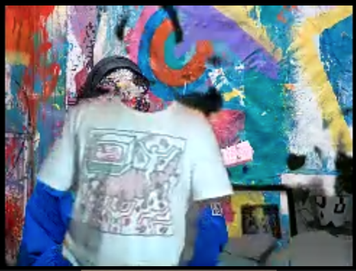
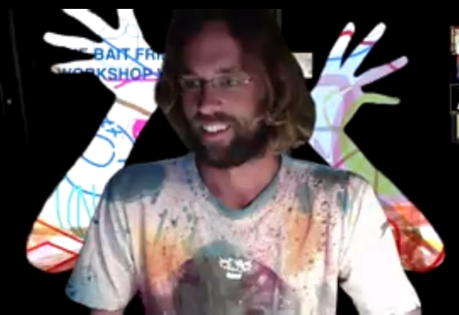
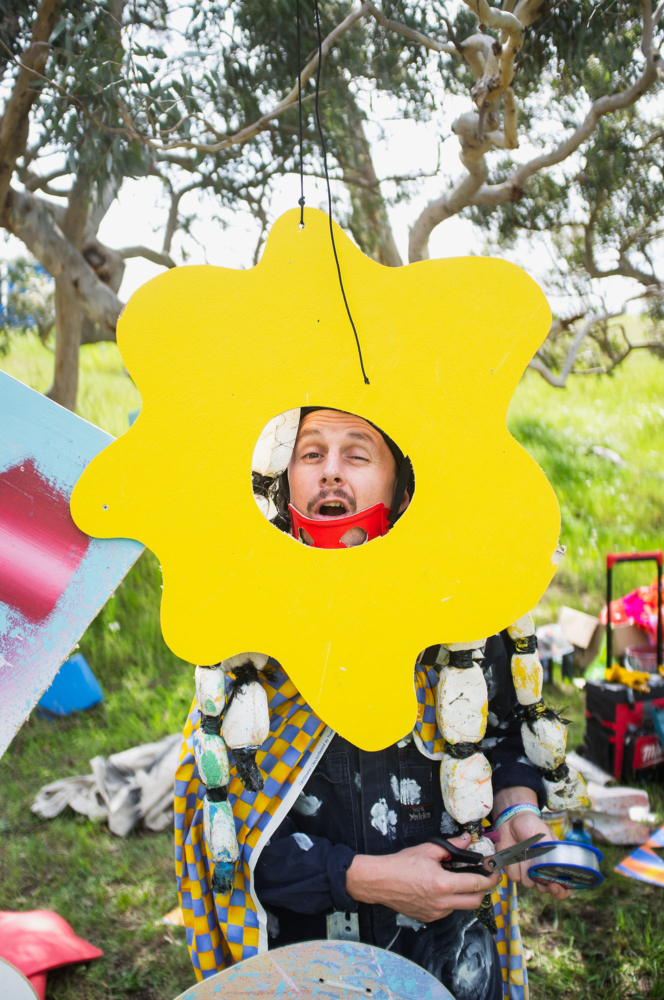
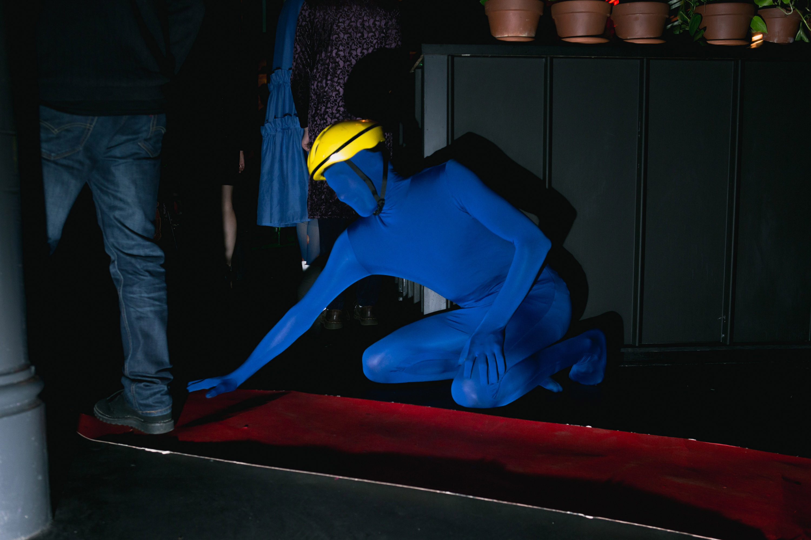

Group Photo
Group Photo
The Mill is a multi-arts, not for profit organisation where artists of all disciplines come to elevate and amplify their practice. Our organisation is rich with stories. We witness and celebrate every part of the artistic process, facilitating insight and multiple levels of criticality. It’s a place to feel connected, inspired and motivated to create great work. The Mill is recognised as a hub of creative innovation and cross-artform practice, making great contributions to the national contemporary arts sector, and positively impacting South Australia’s cultural landscape. Our rich, year-round program provides artists with the necessary physical space to work on their practice, alongside diverse public events, performances and exhibitions, and professional development opportunities. The Mill’s masterclasses, workshops and residencies place local artists, both emerging and established, with leading practitioners from across the country, and around the world. Since 2013, The Mill has provided artists with short and long-term support, always advocating for artistic careers and responding to the aspirations of our community.
The Bait Fridge are our incoming Artists in Residence in The Mill's Exhibition Space in 2020. Due to the current COVID-19 crisis, this residency is developing new ways of creating digital content so that the residency can be available online. The Bait Fridge collective will be in residence from March 17 to May 29. With a focus on artistic process, this two-month residency allows audiences direct access to creative research and making. This residency is presented in partnership with City of Adelaide.
The Bait Fridge is a multi-disciplinary collective from South Australia whose members collaborate under a unified banner to create works and performances which combine the practices of music, art, dance, costume and theatre. Through this project The Bait Fridge will be developing ideas, costumes, performances, sculpture and music. Working with materials that other people might consider to be trash allows the collective to see beyond traditional boundaries of artists practice. Each of the members of the collective brings their own unique energy, while working collaboratively, with each other as well as audiences, allowing The Bait Fridge to explore new ways of creating and bringing new understandings to concepts of ‘art’ and the role of the ‘artist’.
The Mill invites you to witness The Bait Fridge’s creative practice digitally and gain insight into their collaborative process as the residency unfolds across a 10 week period.
Although we are currently practicing social distancing, in light of COVID-19, we will be presenting digital content for you to enjoy from the comfort of your homes. Please keep an eye on our social media for updates.
Presented in partnership with the City of Adelaide.
Group Photo
 Zebra
Zebra
 Man of Gloves
Man of Gloves
 Zoom Life
Zoom Life
 Floating Head
Floating Head
 Group zoom
Group zoom
Shirt
Hands of Shirt
Field Good
SALA 2019